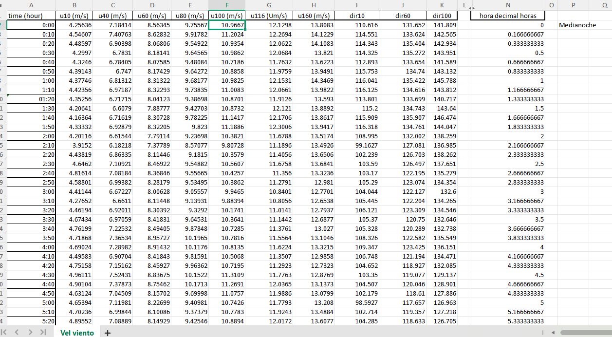

📁 IMÁGENES NECESARIAS — coloca estos PNG en la misma carpeta que el HTML
✓ pc13_histograma.png← histograma de frecuencias (generado por Python/Colab)✓ pc13_rayleigh.png← curva distribución Rayleigh K=2 (generado por Python/Colab)✓ pc13_potencia.png← gráfico P=f(V) potencia vs velocidad (generado por Python/Colab)✓ pc13_serie_temporal.png← serie temporal velocidad 60m (generado por Python/Colab)○ pc13_tabla_excel.png← captura del Excel del profesor (Win+Shift+S)○ pc13_tabla_frecuencias.png← captura tabla de frecuencias del Excel del profesor (Win+Shift+S)
PC 13 · Energías Renovables · UNALM 2026-I · u60 (m/s) · 109 observaciones cada 10 min
Vm = 10.16 m/sMáx = 14.64 m/sMín = 7.34 m/sσ = 2.25 m/sC Rayleigh = 11.47 m/s
Paso 1 — Distribución de tiempo: ¿qué velocidad hubo en cada momento?
¿Qué es la distribución de tiempo?
Es una tabla que organiza TODAS las mediciones en una cuadrícula de hora × medida dentro de la hora.
Cada celda = la velocidad exacta registrada en ese instante.
Hora 0 (medianoche)
→
Medida 1: 00:00
→
Medida 2: 00:10
→
Medida 3: 00:20
→
... hasta :50
Filas = hora entera del día (0, 1, 2, ..., 18 en tus datos)
109 obs = 18 h × 6 medidas + 1 extra (hora 18 incompleta)
⚠️ La hora 18 solo tiene Medida 1 (9.987 m/s) — las demás son NaN porque los datos se cortaron ahí.
Resultado de tu tabla
Hora
M1 (0')
M2 (10')
M3 (20')
M4 (30')
0
8.563
8.628
8.068
8.181
10
10.067
9.970
10.006
11.136
12
14.617
13.543
13.544
14.432
18
9.987
NaN
NaN
NaN

📷 pc13_tabla_excel.png — captura del Excel del profesor
Tabla distribución de tiempo (Excel del profesor)
Paso 2 — Distribución de frecuencias: ¿cuánto tiempo sopló el viento en cada rango?
¿Qué es un intervalo de velocidad?
Se divide el rango de velocidades en "cajitas" de 1 m/s (0–1, 1–2, ...) y se cuenta cuántas observaciones caen en cada una.
Tus datos: 7.34 → 14.64 m/s → solo intervalos 7–8 hasta 14–15 tienen datos
Los intervalos 0–7 y 15–20 tienen frecuencia = 0 ese día
Histograma generado por Python/Colab
Las 4 columnas que calcula el código
Frec. absoluta¿Cuántas mediciones caen ahí? Ej: 47 entre 8–9 m/s
Frec. relativa (%)47/109 = 43.1% del tiempo entre 8–9 m/s
Frec. acumulada (%)Suma progresiva. ¿Qué % del tiempo el viento estuvo bajo X m/s?
Duración (h)Frec. abs × 10 min. Ej: 47 × (10/60) = 7.83 h
🎯 Examen: El intervalo 8–9 m/s concentra el 43.1% de las observaciones. ¿Qué implica esto para el diseño de un aerogenerador en este sitio?
Resultado de tus datos
Intervalo
Frec. abs.
Frec. rel. %
Duración h
7–8
9
8.26%
1.50
8–9
47
43.12%
7.83
9–10
6
5.50%
1.00
10–11
8
7.34%
1.33
11–12
10
9.17%
1.67
12–13
8
7.34%
1.33
13–14
14
12.84%
2.33
14–15
7
6.42%
1.17
⚠️ El intervalo 8–9 m/s domina con 43% del tiempo — viento moderado-alto y constante.
Paso 3 — Velocidad media: el valor representativo de todo el viento
¿Cómo se calcula la velocidad media?
El código da dos métodos. El profesor usa la ponderada por frecuencia relativa porque usa los límites de los intervalos (marca de clase).
Método 1 — Media simple
Vm = Σ vᵢ / n = suma de las 109 mediciones ÷ 109 Vm = 10.1612 m/s
En Python: vel.mean()
Método 2 — Media ponderada (profe)
Vm = Σ (marca_clase × frec_relativa)
= 7.5×0.0826 + 8.5×0.4312 + 9.5×0.0550 + ...
Vm = 10.2156 m/s
Punto medio de cada intervalo × su peso proporcional
⚠️ La diferencia (10.16 vs 10.22) es pequeña aquí. El método ponderado es el estándar en ingeniería eólica.
Marca de clase: la clave del método
Punto medio del intervalo = (lím. inferior + lím. superior) / 2. Representa a TODAS las velocidades de ese rango.
Intervalo
Lím. inf.
Lím. sup.
Marca
Aporte a Vm
7–8
7
8
7.5
7.5 × 0.0826 = 0.620
8–9
8
9
8.5
8.5 × 0.4312 = 3.665
9–10
9
10
9.5
9.5 × 0.0550 = 0.523
13–14
13
14
13.5
13.5 × 0.1284 = 1.733
Tabla de frecuencias (Excel del profesor)
🎯 Examen: Si la frec. relativa del intervalo 8–9 m/s es 43.12% y la marca de clase es 8.5 m/s, ¿cuánto aporta ese intervalo a la velocidad media ponderada?
Respuesta: 8.5 × 0.4312 = 3.665 m/s — el mayor aporte individual
Paso 4 — Distribución Rayleigh y Potencia del viento
¿Qué es Rayleigh?
Modelo matemático (Weibull K=2) que predice con qué probabilidad aparece cada velocidad, usando solo Vm como parámetro.
C = Vm / (√π / 2) = 10.1612 / 0.8862 C = 11.4657 m/s
R(V) = (2/C²) × V × exp(-(V/C)²)
Curva Rayleigh generada por Python/Colab
Potencia del viento
La potencia crece con el cubo de la velocidad. Duplicar V → potencia × 8.
P_disp = ½ × ρ × A × V³ P_ext = Cp × P_disp
A Vm=10.16 m/s, A=1 m²: P_disp = 642.6 W | P_ext = 257 W
ρ = 1.225 kg/m³ (estándar — ajustar con altitud real)
Cp = 0.40 asumido — límite de Betz = 0.593
Energía anual estimada: 3,020 kWh/año por m² de rotor
🎯 Examen: ¿Por qué la potencia disponible en el viento es proporcional a V³ y no a V²?
Gráficos generados por Python
P = f(V) generado por Python/Colab
Serie temporal — velocidad a 60 m
Densidad real del aireρ = 353.05/T × exp(-0.034163×Z/T)
con T en Kelvin y Z en metros
Área de rotorA = π × (D/2)²
Actualiza AREA_ROTOR en el código Python
Resumen integrador
Paso
Qué calcula
Resultado clave
Para qué sirve
Pendiente
1. Dist. de tiempo
Matriz hora × medida
Hora 12 → vientos más fuertes ~14 m/s
Patrón diurno del viento
—
2. Dist. de frecuencias
Conteo por intervalos 1 m/s
8–9 m/s domina con 43.1%
Dónde "vive" el viento
—
3. Velocidad media
Ponderado por frec. relativa
Vm = 10.16 / 10.22 m/s
Parámetro base
—
4. Rayleigh K=2
Distribución de probabilidad
C = 11.47 m/s
Predecir frecuencia de V
—
5. Potencia
P = ½ρAV³
642.6 W a Vm (A=1 m²)
Diseñar aerogenerador
ρ real, área rotor
6. Energía anual
Σ P×tiempo/intervalo
3,020 kWh/año por m²
Viabilidad económica
Cp y área reales
⚠️ Dato clave: las 109 obs son solo ~18 h de UN día. La energía anual de 3,020 kWh/año se extrapoló con Rayleigh a 8,760 h/año — NO es medición real de un año.
📝 QUIZ DE REPASO — 10 PREGUNTAS
Marca tu respuesta y descubre si es correcta
0 / 10 respondidas
0 correctas
Pregunta 1 / 10
¿Cuántas observaciones tiene el conjunto de datos y cada cuánto tiempo fueron tomadas?
✅ ¡Correcto! El dataset tiene 109 mediciones tomadas cada 10 minutos, cubriendo aproximadamente 18 horas de un día (de 00:00 a 18:00 h).
❌ Incorrecto — la respuesta correcta es B. Cada fila del Excel representa una medición de 10 minutos. 109 × 10 min ≈ 18 horas de datos.
Pregunta 2 / 10
En la distribución de tiempo, ¿qué representa cada FILA y cada COLUMNA de la tabla?
✅ ¡Correcto! Cada fila es una hora entera (0, 1, 2... 18) y cada columna es la medida dentro de esa hora: M1=minuto 0, M2=minuto 10, ..., M6=minuto 50.
❌ Incorrecto — la respuesta es C. La tabla organiza: filas = hora del día, columnas = cada medición de 10 min dentro de esa hora.
Pregunta 3 / 10
¿Cuál es el intervalo de velocidad más frecuente en tus datos y qué porcentaje del tiempo representa?
✅ ¡Correcto! El intervalo 8–9 m/s domina con 47 observaciones de 109 = 43.12%. Esto significa que el viento sopló casi la mitad del tiempo registrado entre 8 y 9 m/s.
❌ Incorrecto — la respuesta es D. 47 de 109 observaciones estuvieron entre 8–9 m/s = 43.12%. Es el intervalo absolutamente dominante.
Pregunta 4 / 10
¿Qué es la "marca de clase" de un intervalo y cómo se calcula?
✅ ¡Correcto! La marca de clase representa a TODAS las velocidades dentro del intervalo con un único valor. Para 8–9 m/s: (8+9)/2 = 8.5 m/s.
❌ Incorrecto — la respuesta es A. La marca de clase es el punto medio: (lím. inf + lím. sup) / 2. Para el intervalo 8–9: marca = 8.5 m/s.
Pregunta 5 / 10
¿Cuánto aporta el intervalo 8–9 m/s a la velocidad media ponderada si su marca de clase es 8.5 m/s y su frecuencia relativa es 43.12%?
✅ ¡Correcto! Aporte = marca × frec. relativa = 8.5 × 0.4312 = 3.665 m/s. Es el mayor aporte individual de todos los intervalos y explica por qué Vm ≈ 10 m/s.
❌ Incorrecto — la respuesta es C. Se multiplica: 8.5 m/s × 0.4312 = 3.665 m/s. La suma de todos los aportes da Vm = 10.2156 m/s.
Pregunta 6 / 10
¿Cuál es la diferencia entre la velocidad media simple y la velocidad media ponderada, y cuál es más precisa?
✅ ¡Correcto! Simple = Σvᵢ/n = 10.1612 m/s. Ponderada = Σ(marca×frec.rel) = 10.2156 m/s. La diferencia es pequeña aquí, pero la ponderada es el método estándar en análisis eólico.
❌ Incorrecto — la respuesta es C. La simple suma todos los valores brutos; la ponderada usa los intervalos como agrupación, que es el método que usa el profesor.
Pregunta 7 / 10
En la distribución Rayleigh (K=2), ¿cómo se calcula el parámetro de escala C a partir de la velocidad media Vm?
✅ ¡Correcto! C = Vm / (√π/2). Para Vm = 10.1612 m/s → C = 10.1612/0.8862 = 11.4657 m/s. Esta relación viene de la propiedad matemática de la distribución Rayleigh.
❌ Incorrecto — la respuesta es B. La relación entre Vm y C en Rayleigh es: C = Vm / (√π/2) = Vm / 0.8862. Con Vm=10.16 → C=11.47 m/s.
Pregunta 8 / 10
¿Cuál afirmación sobre la potencia del viento es FALSA?
✅ ¡Correcto! C es falsa. El límite de Betz establece que el máximo teórico extractable es 59.3% (Cp = 0.593), no el 100%. Extraer más significaría detener completamente el viento, lo cual es físicamente imposible.
❌ Incorrecto — la respuesta falsa es C. El límite de Betz = 0.593 = 59.3% máximo. Nunca se puede extraer el 100% de la potencia del viento.
Pregunta 9 / 10
¿Por qué la energía anual calculada de 3,020 kWh/año NO es un valor confiable para diseño real?
✅ ¡Correcto! Las 109 observaciones cubren solo ~18 horas de un día. Extrapolar eso a 8,760 h/año asume que el viento siempre se comporta igual, ignorando variaciones estacionales, diurnas y climáticas.
❌ Incorrecto — la respuesta es C. El problema es la representatividad: 18 horas no son suficientes para caracterizar un año completo de recurso eólico.
Pregunta 10 / 10
¿Qué datos adicionales necesitas para completar el cálculo real de potencia y energía de este sitio?
✅ ¡Correcto! Para un diseño real se necesita: (1) ρ real con altitud y T del sitio, (2) área de rotor con el D real, (3) Cp según curva de potencia de la turbina, y (4) al menos 1 año de datos para capturar variabilidad estacional.
❌ Incorrecto — la respuesta es D. Todos esos factores son necesarios: densidad real, área del rotor, eficiencia real (Cp) y datos representativos de al menos un año.